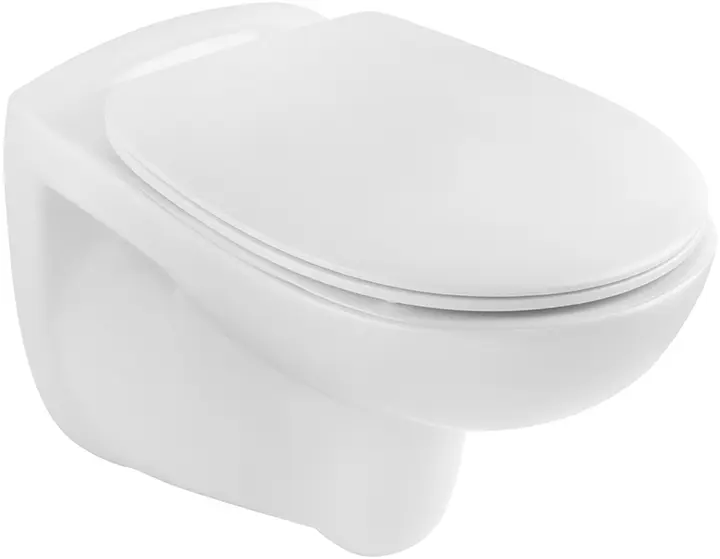

Byta eller reparera toalettstol i Uppsala & Knivsta
Vi erbjuder trygg service, fast pris och möjlighet till jour om det behövs.
Har din toalett börjat läcka, rinna eller ser du tecken på slitage? Då är det dags att kontakta ProfessRör – din lokala rörmokare i Uppsala och Knivsta. Vi hjälper dig med reparation, installation och byte av alla typer av WC-stolar, både i samband med renovering och vid akuta problem
När bör man byta toalett?
En gammal toalettstol som läcker, spruckit i porslinet eller har trasiga mekaniska delar kan ofta vara svår eller omöjlig att reparera. I dessa fall är ett byte både en enkel och smart lösning för att fräscha upp badrummet. Moderna WC-stolar är inte bara snyggare och mer lättstädade – de är även snålspolande och kan hjälpa dig att spara vatten och pengar på sikt.
Offertförfrågan
Vanliga problem med toalettstolar
.png)
- Konstant rinnande vatten
- Läckage från anslutningar eller porslin
- Trasig spolknapp eller inre mekanik
- Lukt från golvfog eller avlopp
- Gulnad silikon runt WC-fästet
- Instabilitet eller sprickor
Vi har reservdelar till alla vanliga märken, bl.a. Ifö, Geberit, Gustavsberg, Ido, Tapwell och fler.
Vi hjälper dig med

- Byte av golvstående toalett
- Installation av vägghängd WC
- Reparation av rinnande eller trasig toalett
- Justering och byte av inlopps-/utloppsventil
- Byte av spolknapp eller flottör
- Bortforsling av gammal toalett
Olika typer av toalettstolar
-

Vägghängd toalett
Vägghängda WC-modeller med fixtur är populära tack vare sin stilrena design och enklare städning. De minskar dessutom risken för vattenskador vid korrekt installation. Nackdelen är att de är något dyrare och kan vara svårare att reparera.
-

Golvstående toalett med S-vattenlås
Den vanligaste modellen i svenska hem. Monteras direkt på golvet med avlopp rakt ner. Enklare att installera, prisvärd och lätt att serva. Nackdelen är att den tar mer plats och kan vara svårare att städa.
-

Golvstående toalett med P-vattenlås
Har bakåtgående avloppsanslutning mot vägg. Denna modell är också lätt att reparera och har ofta lägre risk för läckage mot golvet.
Våra tjänster – Pålitliga VVS-lösningar för hem och företag i Uppsala, Knivsta och Stockholm
-

Professionell personal
Våra certifierade VVS-tekniker erbjuder högkvalitativa tjänster och lösningar anpassade efter dina behov – alltid med fokus på kvalitet och kundnöjdhet.
-

Tillgängliga 24/7
Behöver du akut hjälp? Vi erbjuder jourservice dygnet runt i Uppsala, Knivsta och Stockholm, så att du alltid kan känna dig trygg.
-

Spara pengar
Med våra effektiva och hållbara VVS-lösningar sparar du både tid och pengar – en investering i trygghet och framtiden.
❓ Frågor & svar om WC-byte
Vad kostar det att byta toalett?
Priset varierar beroende på modell och förutsättningar, men vi erbjuder fasta priser inklusive arbete och material – samt möjlighet till ROT-avdrag.
Måste jag byta toalett eller kan den lagas?
Vi hjälper dig att avgöra det. Ofta kan vi reparera inre delar, men ibland är byte mer kostnadseffektivt.
Kan jag köpa toaletten själv?
Ja – eller så hjälper vi dig att välja en passande modell och sköter hela beställningen.
Bortforsling & installation
När vi installerar en ny toalettstol kan vi även forsla bort den gamla till återvinning – så slipper du tänka på det själv.Vårt mål är att leverera installerat och klart med ett enda besök.
Offertförfrågan
Kontakta din rörmokare i Uppsala & Knivsta
Behöver du hjälp med att byta eller reparera din toalettstol? ProfessRör finns här för dig i både Uppsala och Knivsta – med auktoriserade montörer, tydlig kommunikation och jour vid behov.
❓ Vanliga frågor om att byta toalettstol
❓ Vad kostar det att byta toalett?
I de flesta fall kostar ett toalettbyte mellan 2 500 och 4 500 kr inklusive installation. Vi erbjuder fasta priser, och med ROT-avdrag betalar du bara hälften av arbetskostnaden i Uppsala eller Knivsta.
❓ Måste jag byta toalettstol eller går det att reparera?
Om inredningen är trasig eller porslinet spruckit är det ofta bättre att byta. Men vi hjälper dig att bedöma om det räcker med en reparation av t.ex. inloppsventil eller flottör.
❓ Kan jag byta toalett själv?
Ja, det är tillåtet att byta toalett själv – men det kräver kunskap, rätt verktyg och ofta en stark rygg. Vi rekommenderar alltid att anlita en auktoriserad VVS-montör för ett säkert och fackmannamässigt resultat.
❓ Hur lång tid tar det att byta en toalettstol?
Själva bytet tar vanligtvis 1–2 timmar beroende på modell och befintliga anslutningar. Vi gör installationen snabb och korrekt – oftast på ett enda besök.
❓ Tar ni med den gamla toalettstolen vid byte?
Ja. Vi tar med den gamla WC-stolen till återvinning i samband med installation, så du slipper tänka på transport eller avfallshantering.